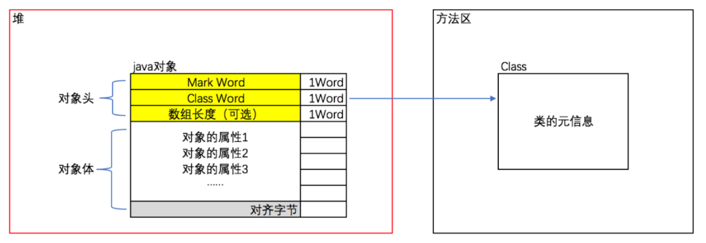
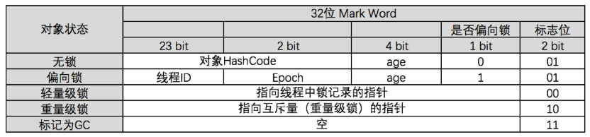
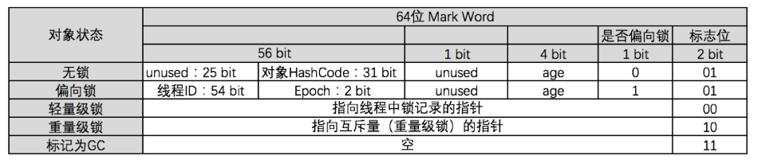
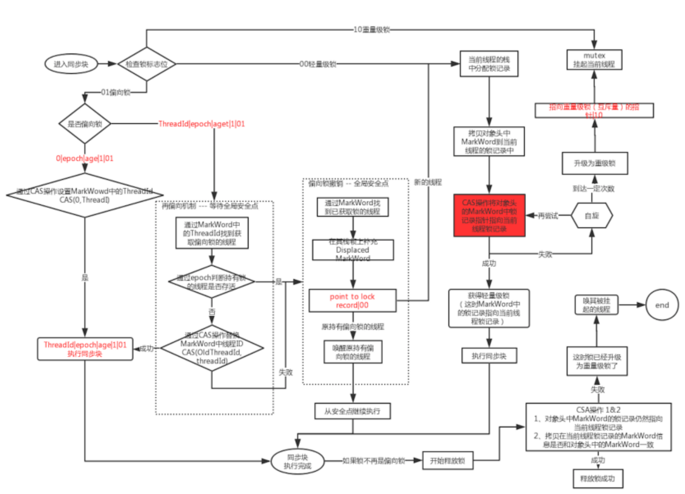

线程安全与锁优化
线程安全
Java中的线程安全
- 不可变
保证对象不可变只需要把对象中带有状态的变量都定义为final，这样构造函数结束后，就是不可变的 - 绝对线程安全
不管运行时环境如何，调用者都不需要任何额外的同步措施。几乎很难达到绝对的线程安全 - 相对线程安全
平时大部分情况下说的线程安全就是这种相对是线程安全，比如HashTable - 线程兼容
对象本身不是线程安全的，但可以通过在调用端正确地使用同步手段来报障对象在并发环境中可以安全地使用；通常说的一个类不是线程安全的，绝大多数时候指的是这一种情况。 - 线程对立
无论调用端是否采取同步措施，都无法在多线程环境中并发使用的代码
线程安全的实现方法
同步互斥
synchronized
1、经过编译后，会在同步块的前后分别形成monitorenter和monitorexit这两个字节码指令，这两个字节码指令都需要一个reference类型的参数来指明要锁定和解锁的对象。
- synchronized修饰类，锁定的是class对象
- synchronized修饰方法，锁定的是对象实例
- synchronized指定了对象，锁定的是这个对象的reference
2、synchronized同步块对同一条线程来说是可重入，不会出现把自己锁死的问题
3、java的线程是映射到操作系统的原生线程上的，如果要阻塞或者唤醒一个线程，都需要操作系统来帮忙完成，这就需要从用户态转换到核心态中（甚至有时状态转换消耗的时间比用户代码执行的时间还长）。所以synchronize是一个重量级的操作
java.util.concurrent.ReentrantLock
1、ReentrantLock和synchronized很像似，都是重入的，只是在写法上有区别，一个表现为API层面的互斥锁（lock()和unlock()配合try/finally语句块完成），一个是原生语法层面的互斥锁
2、RentrantLock相比synchronized增加了一些高级特性
- 等待可中断
- 当持有锁的线程长期不释放锁时，正在等待的线程可以选择放弃等待，改为处理其他事情
- 通过lock获取锁而被阻塞的线程被中断后继续往下运行
- 通过lockInterruptibly获取锁而被阻塞的线程被中断后抛出异常
- 公平锁与非公平锁
- ReentrantLock默认情况是非公平锁，可以通过构造函数指定为公平锁
- 公平锁和非公平锁的主要区别：非公平锁当线程进入时，总是先尝试着获取锁，获取不到再排队（有利于同一线程释放锁后再获取锁），而公平锁，只要当前队列中有线程就排队
- 绑定多个条件
- ReentrantLock可以通过newCondition()，new多个condition，然后通过condition.await，condition.signal来阻塞或唤醒，而synchronized只能绑定一个条件
- 如：生产者消费者中的notEmpty和notFull
总结
1、synchronized是原生支持的，ReentrantLock是通过CAS实现的，调用的是API
2、具体使用哪种性能不是考虑因素
3、优先使用synchronized：优化空间大，兼容性好
4、虚拟机未来的改进方向更倾向于synchronized
非阻塞同步
互斥同步最主要的问题就是进行线程阻塞和唤醒做带来的性能问题，因此也称为阻塞同步。互斥同步属于一种悲观的并发策略。认为一定会产生冲突。非阻塞同步是一种乐观的并发策略，直接访问如果产生了冲突就采用补偿措施。
CAS
1、基于冲突检测的乐观并发策略，依赖于硬件指令集的发展：要求冲突检测和操作这两个步骤具有原子性
2、需要三个操作数：内存值、旧值、新值。当预期值和内存值一致时，设置成新值。实际使用时只需要传入旧值和新值即可
3、java提供了Unsafe类来实现CAS操作（Unsafe类不是提供给外界调用的，不采用反射手段，就只能通过其它的Java API来间接的使用）
- compareAndSwapObject
- compareAndSwapInt
- compareAndSwapLong
4、CAS存在ABA的问题
- 可通过AtomicStampedReference，在比较时把对象和戳印也一起比较
- 实际上大部分的ABA问题都不会对业务逻辑有影响
- 如果真的的有影响可考虑通过synchronized替代
无同步方案
可重入代码（纯代码，Pure Code）
- 不依赖于存储在堆上的数据和公共的系统资源
- 用到的状态量都是由参数中传入
- 不调用非可重入的方法
逃逸分析
1、分析对象的动态作用域
- 当一个对象在方法中被定义后，它可能被外部方法引用，称为方法逃逸
- 有可能被外部线程访问到，称为线程逃逸
2、如果一个对象不会逃逸到方法或线程之外，可针对变量做一些高效的优化
- 栈上分配
- 同步消除
- 标量替换
- 标量是指一个数据已经无法分解成更小的数据来表示了
- java中原始类型（int，long等数值类型及reference类型）都不能进一步分解，他们都是标量
- 如果逃逸分析能够证明一个对象不会被外部访问，并且这个对象可以被拆散的化，那程序真正执行的时候将可能不创建这个对象，而改为创建它的若干个被方法使用到的成员变量替换
3、逃逸分析目前还不够成熟
- 1）不能保证逃逸分析的性能收益必定高于他的消耗：目前虚拟机只是采用不那么准确的时间压力相对较小的算法来完成逃逸分析
- 2）Hotspot虚拟机目前实现方式导致栈上分配实现比较复杂，因此在Hotspot中暂时还没有做这项优化
锁优化
自旋锁和自适应锁
- 互斥同步对性能最大的影响是阻塞的实现，挂起线程和恢复线程的操作都需要进入内核态完成
- 共享数据的锁定状态只会持续很短的一段时间，为了这段时间去挂起和恢复线程并不值得
- 物理机器上有多个CPU时才有用
- 为了让线程等待，我们只需要让线程支持一个忙循环（自旋），这就是自旋锁
挂起线程和恢复线程都需要进入内核态才能完成，可能这两个步骤消耗的时间比之下时间还要长，另外占有锁的线程可能很快执行完成，所有有了自旋锁，如果线程无法获取到锁，先不挂起而是忙循等待一段时间，看是否可以获取到锁，这就是自旋锁。
忙循多久合适呢？如果时间设置太长，可能还需要更长的时间才获取到锁，就浪费了CPU资源，如果时间设置太短，可能在稍微等一下就获取到了锁。这就引入了自适应自旋锁，根据历史获取锁的时间来决定当前忙循的时间。如果历史获取锁的时间长，就直接挂起，如果历史获取的时间短就根据历史时间决定当前忙循的时间。
锁消除
虚拟机使用数据流分析来确定变量是否逃逸，如果不会逃逸，则考虑进行锁消除。比如下面的StringBuffer.append是有通过synchronized加锁的，但在这个方法中，buffer肯定不会逃逸出去，就可以执行锁消除。
public void addString(){
StringBuffer buffer = new StringBuffer("11");
buffer.append("aa");
}
锁粗化
如果一系列的连续操作都对同一个对象进行反复加锁和解锁，甚至加锁操作出现在循环体中，那么即使没有线程竞争，频繁地进行互斥同步操作也会导致不必要的性能损耗。
synchronized(obj){
// statemens 1
}
synchronized(obj){
// statemens 2
}
for(...){
synchronized(obj){
// something
}
}
锁粗化为：
synchronized(obj){
// statemens 1
// statemens 2
}
synchronized(obj){
for(...){
// something
}
}
锁升级
java对象头
1、字宽（Word）：内存大小的单位概念。32位：1 Word = 4 Bytes；64为：1 Word = 8 Bytes
2、对象头

3、32为MarkWord

4、64位MarkWord

锁升级

总结：
- 1、锁升级过程为：偏向锁 --> 轻量级锁 --> 重量级锁
- 2、锁不能降级
- 3、偏向锁适合不会竞争的情况。如果说轻量级锁是在无竞争的情况下使用CAS操作消除同步使用的互斥量，那么偏向锁就是在无竞争的情况下把同步消除掉，连CAS操作都不做了
- 4、偏向锁一旦产生竞争就会升级成轻量级锁
- 5、轻量级锁产生竞争并且等待一定次数仍然不能获取到锁就会升级成重量级锁
- 6、偏向锁MarkWord中存放的是线程的ID和epoch，epoch用来判断占用锁的线程是否还存活（重偏向机制）
- 7、轻量级锁MarkWord中存放的是指向现在中Displaced
- 8、重量级锁，依赖mutex，通过操作系统的互斥实现